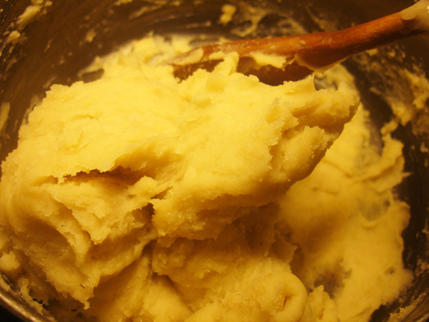

Asida
Libyan asida served with rub and molten sheep ghee; the traditional way to eat Libyan asida is to do so using the index and middle fingers of the right hand.
is a traditional food in Libya
Ingredients
- 25g butter
- 1tsp salt
- 300g flour
- 1 litre boiling water
Served with:
- Honey or date syrup
- Melted butter or ghee
- Fill a deep pot with 1/2 litre hot water. Add 25g butter and a teaspoon of salt.
- Leave on medium heat until the water starts to boil.
- Sift the flour then pour it into the pan all at once then remove from heat.
- Immediately start to stir the flour into the buttery water.
- Press the dough against the side of the pot to remove lumps.
- Once the dough is smooth, with the help of the wooden spoon form it into one lump.
- Put the pot back on the heat and add another half liter of boiling water.

- Use the wooden spoon to form some hollows in the dough. Do not cover and leave to cook on low heat until the water is absorbed. Midway during this process, turn the lump upside down.The dough's cooking takes about 20 minutes.
- Remove from heat. Immediately begin kneading, using a wooden spoon to smooth the asida. If you have a machine that will knead bread dough then it will handle asida fine.

- Melt about 75g of butter or samn (ghee).
- Brush a wide plate with butter.
- Place the asida in the center and begin folding in the edges to form a smooth dome.
- Place the asida in the center and begin folding in the edges to form a smooth dome.
- Turn upside down and use a buttered ladle to form a hollow in the asida.
- Pour the melted butter or ghee around the asida.
- Pour honey or date syrup in the hollow. Serve immediately.